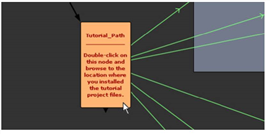
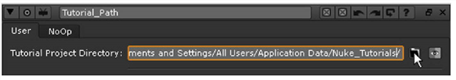
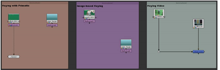

The project file for this tutorial includes several node trees for the keying operations described in this chapter.
| 1. | Launch the Nuke application and choose File > Open Comp from the menu bar. |
| 2. | In the file browser, navigate to your Nuke_Tutorials/Keying/ folder, select the keying_tutor.nk project file and click Open. |
| 3. | Double-click on the Tutorial_Path node, located on the left side of the script, to open its control panel. |

| 4. | In the Tutorial_Path control panel, click the “file folder” button. Browse to the location where you installed the tutorial project files, and then click Open to select the location. |

After you select the correct path, the error messages should clear from the Read nodes, and the thumbnails in the script update with the correct images.
| 5. | Close the Tutorial_Path control panel. Then, choose File > Save Comp As to save a copy of the project file. |
| 6. | Move the mouse pointer over the Node Graph, and press F to frame the entire contents of the project file. |
The green arrows (lines) show the links between the Tutorial_Path node and the Read nodes.
| 7. | If you wish, press Alt+E to hide the expression arrows. |
The Tutorial_Path node saves the location of the project files on your computer, so you don’t need to repeat this for future sessions.
|
 |
|
Node trees in the keying_tutor.nk project file. |
|
|